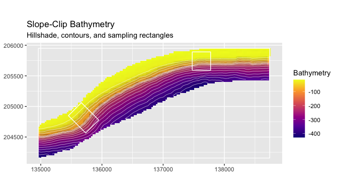
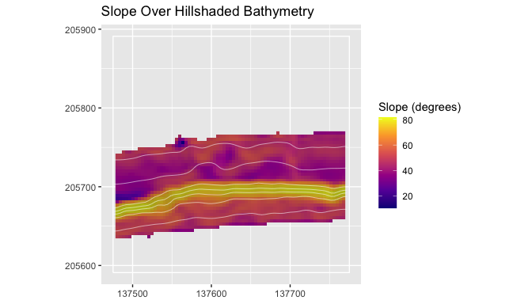
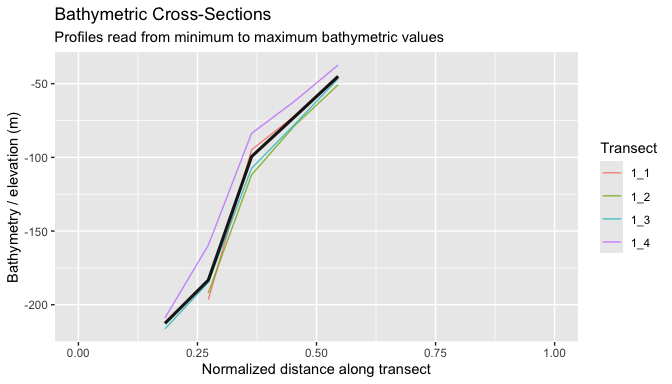
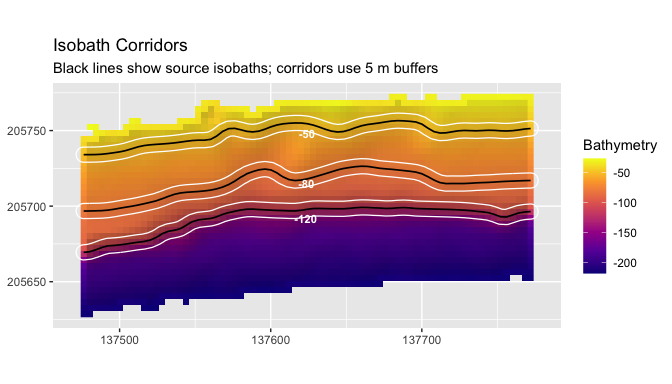

blueterra is an R package for geomorphometric analysis of submerged terrain. It works from user-supplied bathymetric or elevation rasters and provides terra-based workflows for deriving terrain metrics, organizing metrics into process-oriented groups, and summarizing seafloor structure across polygons, transects, depth bands, and isobath corridors. The package is intended for analyses where terrain form, raster resolution, vertical sign convention, and coordinate reference system affect interpretation.
Full documentation and articles are available at https://el-cordero.github.io/blueterra/.
Installation
Install the development version from GitHub:
install.packages("remotes")
remotes::install_github("el-cordero/blueterra")From a local source checkout:
install.packages("path/to/blueterra", repos = NULL, type = "source")Example Data

Study-area context for the example data. The package examples use reduced bathymetry and sampling rectangles from Hole-in-the-Wall, El Hoyo, and a broader slope clip along the southwest Puerto Rico shelf margin near La Parguera, Puerto Rico.
The installed examples are reduced from analysis rasters and sampling rectangles used to test terrain workflows on real shelf-margin morphology. They are compact enough for package examples, but they retain depth gradients, slope breaks, local relief, and sampling-rectangle geometry.
library(blueterra)
library(terra)
hitw <- read_bathy(blueterra_example("hitw"))
hoyo <- read_bathy(blueterra_example("hoyo"))
slope <- read_bathy(blueterra_example("slope"))
rectangles <- terra::vect(blueterra_example("sampling_rectangles"))
hitw_rect <- rectangles[rectangles$site_id == "hitw", ]
examples <- blueterra_examples()
examples$path <- basename(examples$path)
examples
#> # A tibble: 6 × 8
#> name path type description crs nrow ncol feature_count
#> <chr> <chr> <chr> <chr> <chr> <dbl> <dbl> <dbl>
#> 1 hitw lapargu… rast… Reduced Ho… +pro… 75 75 NA
#> 2 hoyo lapargu… rast… Reduced El… +pro… 123 124 NA
#> 3 slope lapargu… rast… Aggregated… +pro… 90 190 NA
#> 4 sampling_rectangles lapargu… vect… Sampling r… +pro… NA NA 3
#> 5 synthetic_bathy synthet… rast… Synthetic … +pro… 60 60 NA
#> 6 synthetic_zones synthet… vect… Synthetic … +pro… NA NA 2Quick Start
This compact workflow reads Hole-in-the-Wall bathymetry, checks the raster assumptions, prepares the surface, derives a focused terrain stack, and summarizes metrics inside the sampling rectangle.
bathy_info(hitw)
#> # A tibble: 1 × 13
#> layer nrow ncol ncell xmin xmax ymin ymax xres yres min max
#> <chr> <dbl> <dbl> <dbl> <dbl> <dbl> <dbl> <dbl> <dbl> <dbl> <dbl> <dbl>
#> 1 bathy_m 75 75 5625 137474. 1.38e5 2.06e5 2.06e5 4.00 4.00 -269. -16.6
#> # ℹ 1 more variable: crs <chr>
hitw_prepared <- prepare_bathy(
hitw,
depth_range = c(-220, -25),
smooth = TRUE,
smooth_window = 3
)
hitw_metrics <- derive_terrain(
hitw_prepared,
metrics = c("slope", "aspect", "northness", "eastness", "tri", "rugosity",
"bpi", "curvature", "surface_area_ratio")
)
terrain_summary <- summarize_terrain(
hitw_metrics,
hitw_rect,
fun = c("mean", "sd", "min", "max")
)
names(hitw_metrics)
#> [1] "slope_deg" "aspect_deg" "northness"
#> [4] "eastness" "tri" "rugosity_vrm_3x3"
#> [7] "bpi_3x3" "bpi_11x11" "curvature"
#> [10] "surface_area_ratio"
terrain_summary[, c("site_id", "site_name", "slope_deg_mean", "bpi_3x3_mean")]
#> # A tibble: 1 × 4
#> site_id site_name slope_deg_mean bpi_3x3_mean
#> <chr> <chr> <dbl> <dbl>
#> 1 hitw Hole-in-the-Wall 50.9 0.00568Depth sign conventions are preserved unless conversion is requested explicitly. The example rasters are stored as negative elevation, so larger numeric values are shallower and smaller values are deeper.
Key Figures
Hillshade is used in these figures as visual relief. It helps the reader see the terrain form behind contours, vectors, and metric layers; it is not a model predictor unless the analyst chooses to include it.
plot_bathy(
slope,
contours = TRUE,
contour_interval = 25,
vectors = rectangles,
title = "Slope-Clip Bathymetry",
subtitle = "Hillshade, contours, and sampling rectangles"
)
plot_metric(
hitw_metrics,
metric = "slope_deg",
bathy = hitw_prepared,
contours = TRUE,
contour_interval = 25,
vectors = hitw_rect,
title = "Slope Over Hillshaded Bathymetry",
legend_title = "Slope (degrees)"
)
transects <- make_transects(hitw_rect, spacing = 75, bathy = hitw_prepared)
cross_sections <- sample_transects(transects, hitw_prepared, n = 12)
plot_cross_sections(
cross_sections,
value_col = "bathy_m",
mean_profile = TRUE,
normalize_distance = TRUE,
profile_direction = "min_to_max",
title = "Bathymetric Cross-Sections",
subtitle = "Profiles read from minimum to maximum bathymetric values"
)
isobaths <- extract_isobaths(hitw_prepared, depths = c(-50, -80, -120))
corridors <- make_isobath_corridors(
hitw_prepared,
depths = c(-50, -80, -120),
width = 5
)
plot_isobath_corridors(
corridors,
hitw_prepared,
isobaths = isobaths,
background_contours = FALSE,
title = "Isobath Corridors",
subtitle = "Black lines show source isobaths; corridors use 5 m buffers"
)
Citation
Please cite blueterra with the package citation once the release metadata are finalized:
citation("blueterra")